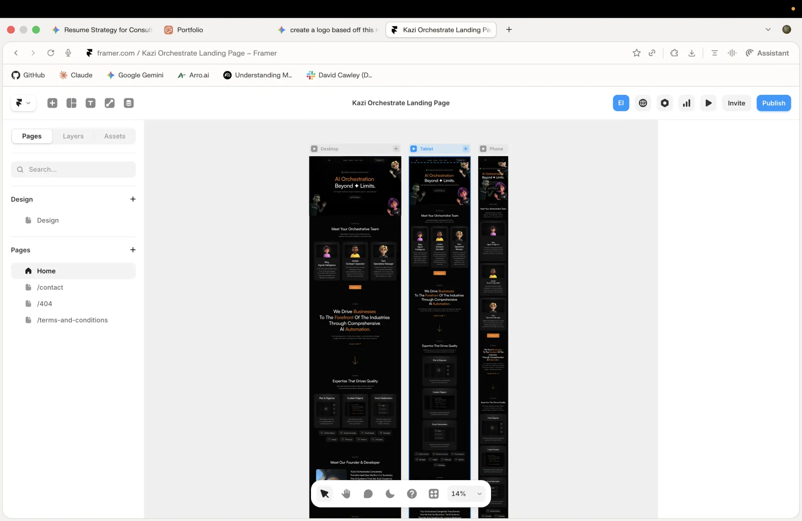

Installs directly into VS Code as a sidebar chat assistant. Accessible via the Kazi icon in the activity bar or Cmd+Shift+K.
All projects
VS Code extension · AI coding agent
Kazi Coder.
An engineering agent that ships code.
A VS Code sidebar chat assistant powered by Anthropic Claude or OpenAI GPT models. It writes, reviews, and ships code across the stack, turning specs into working software with deep memory persistence, self-correction, and context-aware tool orchestration. Deployed via AWS Bedrock.
VS Code ExtensionAWS BedrockAnthropic ClaudeOpenAI GPTTypeScriptSecretStorage API
Mindset applied
Developer tools should respect trust, privacy, and control. Cody is designed to be powerful without hiding what it does.
- Local memory and user-owned data
- Transparent tool usage and outputs
- Safe defaults for autonomous actions

$ Kazi: Open Chat
▸ Connected to Claude Sonnet 4.6
▸ Memory loaded from .cody_memory.md
Cody: Ready. What are we building?
CapabilitiesBuilt for engineers
Built for engineers
who ship.
Choose between Anthropic Claude (Opus, Sonnet, Haiku) or OpenAI GPT models. Switch providers and models on the fly without losing context.
Conversation history persisted locally in .cody_memory.md per workspace. Your data stays on your machine and is never sent to Kazi servers.
You provide your own Anthropic or OpenAI key. Keys are stored via VS Code encrypted SecretStorage, backed by your OS keychain, never logged.
Cody handles feature builds, bug fixes, and technical tasks end to end, turning specs into working software with deep memory and self-correction.
Deployed via AWS Bedrock. Maintains deep context awareness across files, functions, and prior conversations within the workspace.
CommandsThree commands.
Three commands.
Everything you need.
Kazi: Configure
Reset the API key and re-open the setup UI
Kazi: New Session
Start a fresh conversation thread
Kazi: Open Chat
Focus the chat sidebar (Cmd+Shift+K)